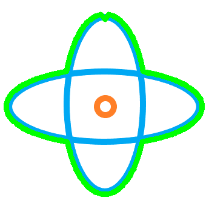

11.添加旋转中心标识
旋转是三维软件的基础交互功能，常常需要显示旋转中心标识以方便观察当前旋转中心位置。如当选中构件时旋转常常期望以构件（接触点或几何中心等）为中心进行旋转；无聚焦点时旋转又常常以场景中心为旋转中心。
11.1.概述
基于如下考虑，我们采用此前绘制viewCube的思路来绘制旋转中心，还能想起来吗？
- 构建原点为中心的数据；
- 个性化构建
viewMatrix，如以固定的正视视角和距离观察旋转中心标识； - 在经过
projectionMatrix投影后（此时得到了标准化设备坐标）立即进行偏移：通过目标像素位置计算偏移距离，偏移到标准化设备坐标范围中对应位置； - （默认处理）此后通过视口变换映射到屏幕上的像素位置，旋转中心标识正确显示到了对应像素位置。
我们可能会有疑问，怎么样得到目标像素位置，怎么样计算偏移距离？带着疑问，我们继续学习。
考虑因素：
- 为保持更高的渲染效率，继续采用基于
VAO、VBO、EBO的数据桥梁机制，先配置好数据，而后在渲染循环中绘制； - 考虑可维护性和扩展性，采用相同的机制绘制场景元素，如
viewCube、mouseRotateLabel等；
11.2.添加世界坐标和屏幕坐标转换函数
在此前的相机实现中，我们通过监控鼠标左键按住移动事件实现了场景旋转，其中我们判断了第一次按下时鼠标所在位置是否接触有效元素，并计算并记录接触位置的场景坐标赋值给mousePos4Rotate。
提示：
上述使用了场景坐标的名词，指的是当前Viewer场景中的坐标，即通过y-up转为GLViewer采用的z-up规则后的坐标。
Attention
我们发现Camera类中的Screen2World和World2Screen函数名不太准确，那就行动吧，分别更改为Screen2Scene和Scene2Screen。同时GetWorldPos函数实现有点问题，且并没有被使用，我们先注释它。
上述mousePos4Rotate是场景坐标，我们可以将其变换到屏幕坐标（像素位置），然后再进一步根据逆向的视口变换过程得到在标准化设备坐标范围中的偏移。
void ViewerUtils::worldToScreen(const QVector3D& wcsPt, const QRect& viewport_rect, bool considerModelTrans, const QMatrix4x4& modelMat, const QMatrix4x4& viewMat, const QMatrix4x4& projectionMat, float& px, float& py, double& depth)
{
QVector4D ray_eye(wcsPt, 1.0);
if (considerModelTrans)
ray_eye = modelMat * ray_eye;
ray_eye = projectionMat * viewMat * ray_eye;
depth = ray_eye.z() / ray_eye.w();
px = (ray_eye.x() / ray_eye.w() + 1.f) / 2.f * viewport_rect.width();
py = (ray_eye.y() / ray_eye.w() - 1.0) / -2.f * viewport_rect.height();
}
注意上述参数bool considerModelTrans，如果设为false则是将场景坐标转换为屏幕坐标，否则将世界坐标转换为屏幕坐标。
另外，我们也定义了screenToWord函数，详见工程代码~
11.3.配置数据
我们参考viewCube数据的配置过程配置旋转中心标识数据，我们需要一个中心在原点的矩形面结合标识图片作为纹理来表达。
void Model::setupMouse()
{
Vector3f pt0{ -2.f, -2.0f, 0.0f };
Vector3f pt1{ 2.f, -2.0f, 0.0f };
Vector3f pt2{ 2.0f, 2.f, 0.0f };
Vector3f pt3{ -2.0f, 2.f, 0.0f };
Vector3f nor0{ 0.0f, 0.0f, 1.0f };
Vector3f nor1{ 0.0f, 0.0f, 1.0f };
Vector3f nor2{ 0.0f, 0.0f, 1.0f };
Vector3f nor3{ 0.0f, 0.0f, 1.0f };
Face face;
face.outerLoop.lstLine.push_back(Line{ pt0, pt1 });
face.outerLoop.lstLine.push_back(Line{ pt1, pt2 });
face.outerLoop.lstLine.push_back(Line{ pt2, pt3 });
face.outerLoop.lstLine.push_back(Line{ pt3, pt0 });
TriangleMesh cMesh;
CGUtils::TesslateFace(face, cMesh);
vector<Vector2f> lstUvs;
lstUvs.push_back(Vector2f(0.0, 0.0));
lstUvs.push_back(Vector2f(1.0, 0.0));
lstUvs.push_back(Vector2f(1.0, 1.0));
lstUvs.push_back(Vector2f(0.0, 1.0));
cMesh.SetUVs(lstUvs.size(), &lstUvs[0].U);
auto mesh = ConvertMesh(cMesh);
mapName2VMesh.insert(make_pair(ViewerCache::mouseLabel, MeshInfo(mesh, Vector3W(1.0f, 1.0f, 1.0f, 1.0f))));
}
像此前的处理一样，我们把配置好的mesh添加到mapName2VMesh中，便于之后在渲染循环中进行绘制。
Important
记得把纹理图片添加到glviewer.qrc中哦，否则项目识别不到资源；
你也可以使用自己的图片创造不一样的效果。

嘿嘿，上面的标识图片使用了CGLib库的计算紧密外围轮廓的函数并将紧密外轮廓绘制到了图片上（亮显的外轮廓）。
11.4.绘制函数
由于这些场景元素的绘制过程是大致一样的，我们进行抽象和重构，
void Model::DrawViewElement(QOpenGLShaderProgram& shader, const string& name)
{
auto itrFind = mapName2VMesh.find(name);
if (itrFind == mapName2VMesh.end())
return;
auto& viewCube = itrFind->second;
string imagePath = "";
if (name == ViewerCache::viewCube)
imagePath = ":/viewcube.png";
else if (name == ViewerCache::mouseLabel)
imagePath = ":/rotateLabel.png";
else
throw exception("can not get valid image path.");
auto textTexture = ViewerUtils::getOrCreateImageTexture(imagePath.c_str());
textTexture->bind(0);
shader.setUniformValue("texture_diffuse1", 0);
// viewCube
shader.setUniformValue("objectColor", viewCube.color.GetWX(), viewCube.color.GetWY(), viewCube.color.GetWZ(), viewCube.color.GetW());
viewCube.current->Draw(shader);
textTexture->release();
}
后续其他场景元素也可采用类似的机制和过程，如鼠标捕捉标识、坐标系标识等。
11.5.在渲染循环中调用绘制
通过此前课程我们知道OpenGL是一个状态机，其中的渲染管线也是，参考杉树viewCube的配置过程，我们需要对渲染管线的几个关键环节进行状态配置。
- 通过固定的正视视角和距离构造观察矩阵
GetViewMatrix4MouseLabel； - 将场景坐标
mousePos4Rotate转换为屏幕坐标mousePX和mousePY； - 经过逆向视口变换将屏幕坐标映射为标准化设备坐标范围的位置（也即偏移，因为
旋转中心标识数据在其原点位置），在投影后立即进行此偏移； - 注意此处点光源位置设置为视角方向，目的是让
旋转中心标识拥有明亮的显示效果，毕竟是便于观察嘛；
提示：
- 尽量使
场景元素的深度值小(通过缩小元素尺寸+将观察点设置很近)，便于一直绘制，且不被遮挡；试想一下，场景元素距离透视平截头体的近平面很近，深度值自然就很小； - 当然也可以在片段着色器中更改
场景元素的深度来达到同样目的，那样修改会更多些。
// mouse
float mousePX, mousePY;
double mouseDepth;
ViewerUtils::worldToScreen(m_camera.mousePos4Rotate, { 0, 0, m_camera.SCR_WIDTH, m_camera.SCR_HEIGHT }, false, m_modelMatrix, m_viewMat, m_projectionMat, mousePX, mousePY, mouseDepth);
float pt_x = ((float)mousePX / m_camera.SCR_WIDTH) * 2.f - 1.f;
float pt_y = -((float)mousePY / m_camera.SCR_HEIGHT) * 2.f + 1.f;
QMatrix4x4 offMouseLabel;
offMouseLabel.translate(QVector3D(pt_x, pt_y, 0.0));
m_projection4ViewCube.setToIdentity();
m_projection4ViewCube.perspective(45.0f, (float)m_camera.SCR_WIDTH / (float)m_camera.SCR_HEIGHT, 0.1f, 100.0f);
QMatrix4x4 modelMouse;
modelMouse.translate(m_camera.mousePos4Rotate);
m_textureShader.setUniformValue("lightColor", QVector3D(1.0f, 1.0f, 1.0f));
m_textureShader.setUniformValue("lightPos", QVector3D(0.f, 1.f, 0.f));
m_textureShader.setUniformValue("projection", offMouseLabel * m_projection4ViewCube);
m_textureShader.setUniformValue("view", m_camera.GetViewMatrix4MouseLabel());
m_textureShader.setUniformValue("model", m_modelMatrix);
m_model->DrawViewElement(m_textureShader, ViewerCache::mouseLabel);
11.6.效果
如果一切正常，或者遇到的问题被排查解决，那么运行后可以看到如下效果。